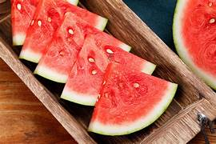
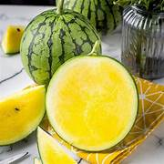

西瓜
古稱寒瓜
是葫蘆科西瓜屬的一種植物或其果實。原產於非洲，是一種雙子葉開花植物，形狀像蔓藤，葉子呈羽毛狀。它所結出的果實是假果，且屬於植物學家稱為瓠果的一類。果實外皮光滑，呈綠色或黃色及有深綠色的花紋，果瓤多汁為紅色或黃色，內有籽。

歷史
現時很難知道種植西瓜是由何時開始，而自有紀錄以來，第一次記有西瓜收成的要在5000年前的古埃及。西瓜果實經常被放在法老的陵墓，以備來世享用。
有科學家認為，西瓜可能源自非洲東部，他們在蘇丹的南科爾多凡州發現了一種名為「科爾多凡瓜」的物種，根據基因比對，它很有可能是現代馴化西瓜的祖先或近親。

營養價值
西瓜果瓤（音同攘）多汁，含有豐富的維生素A及維生素C，通常是生食或者搾汁飲用，可以消暑解渴。根據美國農業部的研究顯示，每100克西瓜的食用價值如下：
碳水化合物——7.6克
膳食纖維——0.4克
脂肪——0.2克
蛋白質——0.6克
水份——91克
維生素C——8.1毫克
一杯西瓜汁可以提供約48千卡路里、14.59毫克的維生素C及556.32IU的維生素A。另外，西瓜汁亦可提供可觀的維生素B1及維生素B6、鉀及鎂，有能對抗癌症或保護太陽灼傷皮膚功效的胡蘿蔔素抗氧化劑：茄紅素及胡蘿蔔素。西瓜盅富含的鉀元素，可以對血壓控制和心臟健康有幫助[5]。
資料來源: